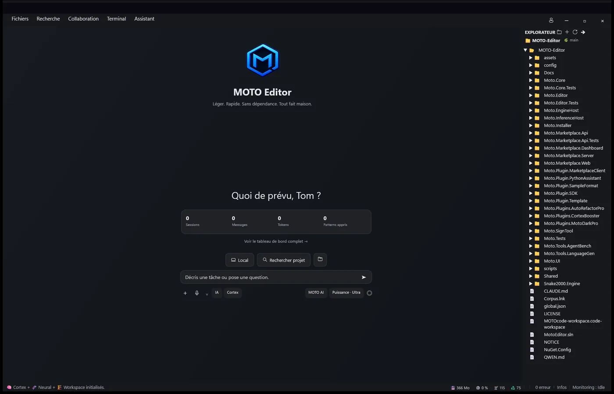
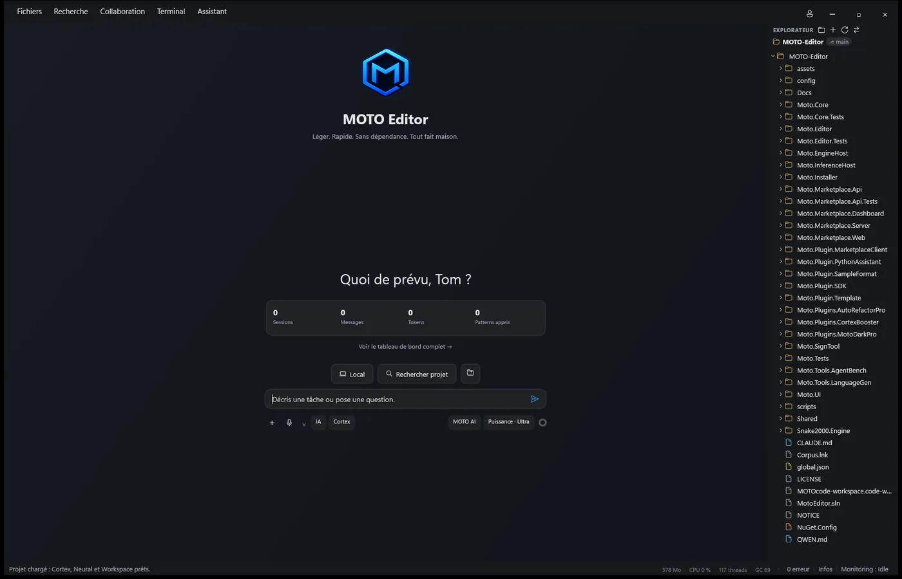

Accueil


Après- La bande noire de 32 px en haut a disparu. Elle venait de MAUI lui-même, pas de Windows.
- Explorateur : une seule famille d'icônes fines, fini les dossiers jaunes.
- Barre d'état et bouton d'envoi sans emoji.
Capture « après » prise sur la version Release de ton raccourci, relancée cette nuit.